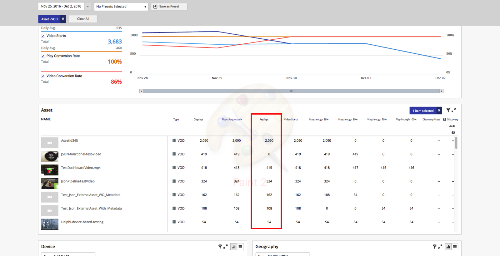
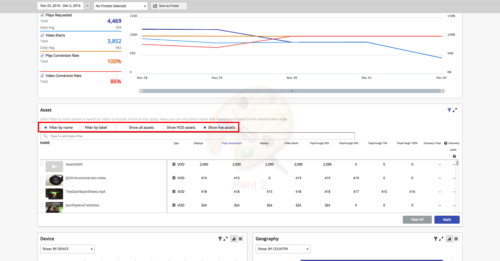
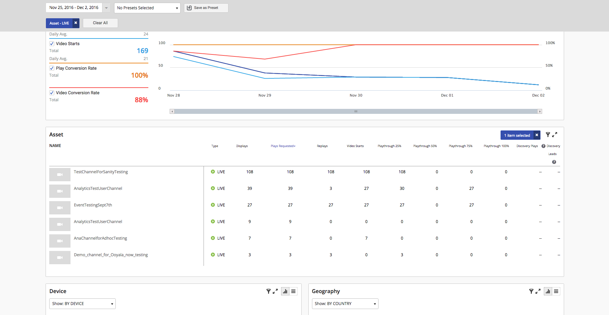
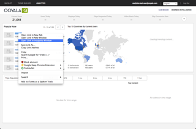
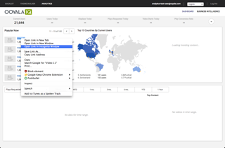

2018-12-17
This Ooyala IQ release introduces the following new features and enhancements:
New Asset Filters in the Business Intelligence page
- You can now filter assets based on custom metadata.
You can do this by clicking on the filter icon for assets and selecting by metadata from the first drop down menu, then entering the key value pair of the custom metadata.Note: You can use commas to add multiple key value pairs of custom metadata.
- You can now filter assets based on a predefined duration.
The pre-defined durations are:
- Small asset 0 - 5 mins in duration
- Medium asset 5 - 20 mins in duration
- Long asset 20+ mins in duration
You can do this by clicking on the filter icon for assets and selecting a duration from the duration drop down menu.
Note: This duration filter will only work for assets with traffic after the release date.
- You can now filter assets based on published date.
You can do this by clicking on the filter icon for assets, then clicking the Filter By Publish Date button and selecting a date range.
- You can now filter assets based on custom metadata.
Support for the user of the master account to filter data from various subaccounts within the Business Intelligence page when logged into the master account.
2018-10-01
This Ooyala IQ release introduces the following new features and enhancements:
Date Range Comparison
The Ooyala IQ Date Range Comparison functionality allows you to easily add a comparison date range on the Business Intelligence page to see how user engagement has changed.
See Using the Date Range Comparison Feature on the Business Intelligence Page for guidance on how to use the date range comparison feature so you can review and compare analytics data for two separate date ranges.
Additional Columns in the Expanded Asset View
The Expanded Asset View on the Business Intelligence page in Ooyala IQ now contains two additional columns:
- The Upload column shows information about the date and time the asset was published.
- The Backlot Embed Code column shows information about the date and time the asset was published;
The visual example below shows the new columns in the Expanded Asset View:
The additional columns can be shown or hidden using the Edit Table Columns option, as shown in the example below:
2016-12-15
The replays metric is available for Ooyala IQ, and is displayed in the UI.
See also the replays metric in the context of the Reporting API.
IQ introduces a new feature whereby the user can filter contents by live streaming or video-on-demand (VOD) content. The feature is part of the UI, located at the top of the key performance indicator (KPI) bar:

- KPI bar
- Concurrent user
- Top contents panel
- Popular now
- Top 10 Countries By Current Users
- Trending past hour
On the Business Intelligence page, the live filter will work for all metrics:
 2016-11-10
Analytics V3 API - Reporting Filters
Filtering can now take place by asset type. See Filters for more details.
Analytics V3 API - Reporting Dimensions
GET API calls with asset dimension now return is_live_type. See Dimensions for more details.
2016-09-30
The features below apply both to Live content types as well as Video-on-Demand content types.
Dashboard
- The overall Concurrent User Trending chart across your entire account can be seen at one-minute granularity level
when login takes place.
The Concurrent User Trending view presents a snapshot at a given moment. The view is updated at each one-minute interval.
- You can select one asset from the Popular Now window or from the Trending Past Hour window, and see Concurrent User Trending for each asset.
- This Trending chart is a dynamic, moving chart that spans from the current moment back to four hours ago. It is updated in real time.
- You can zoom in and out of the chart.
- You can get the peak concurrent user in the chart.

Business Intelligence
- The Business Intelligence Board end-to-end latency has been reduced to 90 minutes.
- You can go to the Reach tab and see concurrent user historical data.
- You can pick any time window, from a minimum of 15 minutes to maximum of 2 days, to see the trending of concurrent users. For example, if you select 03/30/16 12:00pm to 03/30/16 12:15pm, you will get data points for 12:00pm, 12:14pm.
- You can get one-minute data granularity for concurrent user metrics for your overall account, as well as each asset. You can filter by multiple video assets, with an upper limit of 50.
- You can get the peak concurrent user in the Concurrent Trending chart.
- You can view the average concurrent user per minute in the lefthand panel.
Note: No other dimensional breakdown for concurrent user (device, geo, etc.) is supported currently. This means that there is no filter capability for these dimensions. When the user is in one-minute concurrent user view, all filters other than asset are disabled. Likewise, when a filter other than asset is applied, one-minute granularity is disabled.
Note: Concurrent user metrics can only be shown at the one-minute granularity level. If you change the granularity to another value, like fifteen minutes, one hour, etc., the view will automatically switch to show unique users.

2016-08-11
New Features and Enhancements
-
Third-Party Players May Use XDR Functionality.
A third-party player may now make use of XDR code for pause and resume functionality, provided the player can integrate with the IQ JSON API. For example, a video can be paused on an Ooyala player and resumed on a Roku player. Some example third-party devices that are compatible include:
- Roku
- Xbox One
-
XDR Supports External Assets.
XDR now includes support for assets external to Backlot (e.g., located in third-party content-management systems).
2016-08-04
Maximum Number of Assets in Popular Now.
We've increased the number of assets you can view in the Popular Now section. Now you can track up to 100 assets along with the number of users watching them in real time!

Zoom Buttons.
We've added an easier, more intuitive way to interact with charts and see more detail for fifteen-minute and hourly breakdowns. Zoom in and zoom out buttons help you focus on the level of detail you want.

Segments Watched chart now shows percentages even when Asset Duration is unavailable.
We're displaying the Segments Watched chart even for assets that don't have a set length. Percentage is shown instead of time when hovering over chart points.

Proper links for Dashboard assets.
We've added proper links for assets in the Dashboard page that will enable interactions users are accustomed to.
 

2016-06-30
New Hour and 15 Minute Time Segment Granularity in Ooyala IQ UI and API
In the Ooyala IQ UI you can now select hour and 15 minute time segment granularities to apply to the Business Intelligence and Video Details pages.

Use the zoom feature with the hour and 15 minute time segments to highlight a segment of a metric graph and view more granular metric results.
The default date range for the day time segment is different from the default date range for the 15 minute and hour time segments.
For the day time segment the default date range is from 12:00am of the first day to 11:59pm of the last day in the week (8 24 hour segments). For the 15 minute and hour time segments the default date range is from 12:00pm of the first day to 12:00pm of the last day in the week (7 24 hour segments).
This difference in default date range means that your metric data will change when you switch between the day time segment and the 15 minute or hour time segments. We will change the date range limitation for 15 minute and hour time segments to match the day time range (8 24 hour segments) in an upcoming release.
- With the API, if you query with the hour or 15min time segment, you can now query by time with the start_date and end_date. Your start_date and end_date should use the format YYYY-MM-DDTHH:MM. Times selected must be divisible by 15 minutes. If you enter times that are not divisible by 15, an error message will be returned. See Reporting Query String Parameters for details.
New Playthrough Graph on the Ooyala IQ Video Details Page
The playthrough graph on the Video Details page of Ooyala IQ will now match the playthrough graph on the Business Intelligence page (with new time range selection functionality and time series views of playthrough data).

Unlimited Rows of Data From the Ooyala IQ API
With the Ooyala IQ API, for time ranges up to 1 month you can now query by up to 3 dimensions at a time with unlimited rows of data. For time ranges greater than one month you can continue to query by up to 2 dimensions at a time with up to 10,000 rows of data. See Dimensions for more details.
New Xbox One Adapter for Ooyala IQ
The Ooyala Xbox One adapter uses the Ooyala IQ JavaScript SDK to communicate video events from the Xbox One video app to Ooyala IQ. If you use the Ooyala Xbox One adapter, Xbox will appear as an OS in the Device panel of the Business Intelligence page interface.You can implement this adapter yourself, or Ooyala Professional Services can help you implement the adapter for a fee. See Integrating Xbox One Video App with IQ Using the JS SDK for details.
2016-06-23
New Ooyala IQ JavaScript SDK
- Seek events: whenever the viewer seeks (drags the progress indicator forward or backward) through the video.
- Player information: a unique identifier, the name of the player and the version of the player.
For more information regarding the new library, refer to Integrating Third-Party Players with IQ Using the JS SDK.
2016-06-09
New Show by State Expanded Table Option in Ooyala IQ
You can now select Show: BY STATE in the expanded table view of the Geography panel in Ooyala IQ. This allows you to export data categorized by state as a CSV file.
See Viewing Expanded Tables for details.
2016-04-29
New Ooyala IQ JSON API for Third-Party Players
We have updated the Ooyala IQ backend to support a JSON API endpoint. JSON is a lightweight open-standard data interchange format that is language independent, making it easy to read and write.
This JSON API endpoint enhances the existing third-party player support in IQ to allow you to send player events and data from any device or player to Ooyala IQ, including third-party players that are not JavaScript-based.
Use the new Ooyala IQ JSON API to communicate your third-party player's events to Ooyala IQ. You can use this endpoint to send JSON data to Ooyala IQ or you can use one of the out-of-the-box SDKs. For this release, we are offering an out-of-the-box SDK for Roku.
For more details on the Ooyala IQ JSON API, see Integrating Third-Party Players with IQ Using the JSON API.
New Ooyala IQ SDK for Roku Integration
You can now integrate Roku channels with Ooyala IQ with the Ooyala IQ SDK for Roku. The Ooyala IQ SDK for Roku is an out-of-the-box SDK that sends JSON data to the Ooyala IQ JSON API endpoint and automatically follows the best practices for what events should be sent when, and makes sure that all required fields are present.
The Ooyala IQ SDK for Roku supports the Roku OS v7+.
If you use the Ooyala IQ SDK for Roku, Roku will appear as an OS in the Device panel of the Ooyala IQ Business Intelligence interface.

The Roku player will appear in the Player panel as well.
For more details on the Ooyala IQ SDK for Roku, see Ooyala IQ SDK for Roku Integration. For Ooyala IQ SDK for Roku API documentation, see Ooyala IQ Roku Library API Documentation.
2016-03-10 Release
Ability to Save Preset Filters to Your Ooyala IQ Account
If you save a preset filter in Ooyala IQ, the saved preset will be available to you any time you log into your user account (even if you access your account from another device).
Ability to Add All Assets when Filtering by Name in Ooyala IQ
In the Ooyala IQ Asset panel, when filtering by asset name, you can now select all assets that appear in the search results by simply clicking Add all search results.
New Legend for Ooyala IQ Segments Watched
In the Segments Watched section on the Ooyala IQ Video Details page, when you hover your mouse over a specific section on the graph, you can now see a legend that displays the time of the video in HH:MM:SS format with a play count.
Fix to Hours Watched Ooyala IQ Metric for Live Assets
- Playthrough (25%, 50%, 75%, 100%)
- Average playthrough
- Segments watched
- Live asset length
2016-02-10 Release
Ooyala IQ Metrics Supported for Backlot Assets Played in Third-Party Players
- An Ooyala player playing Ooyala assets (hosted in Backlot).
- (NEW) A third-party player playing Ooyala assets (hosted in Backlot).
- A third-party player playing third-party assets (hosted in a third-party CMS).
- OOYALA_CONTENT: Indicates that the
mediaid is an Ooyala embed code. To get the
information you need to specify the Ooyala asset, make the
Backlot API query: /assets/<ASSET EMBED
CODE>/streams for the asset and copy the result of
the desired encoding. The example below shows how
OOYALA_CONTENT is specified with the JW
Player adapter.
<script type="text/javascript"> var jwPlayer = jwplayer("video").setup({ file: 'pathToYourOoyalaMp4VideoAsset', mediaid: 'yourOoyalaEmbedCode', type: 'mp4' }); var jwOoyalaReporter = Ooyala.Analytics.JWReporter("<pcode>", jwPlayer, { contentType: Ooyala.Analytics.MediaContentType.OOYALA_CONTENT }); </script> - EXTERNAL_CONTENT: Indicates that the
mediaid is not an Ooyala embed code (and is
customer-defined media ID from a non-Ooyala CMS). The example
below shows how EXTERNAL_CONTENT is specified
with the JW Player adapter.
<script type="text/javascript"> var jwPlayer = jwplayer("video").setup({ file: 'pathToYourVideoAsset', mediaid: 'yourMediaID' }); }); var jwOoyalaReporter = Ooyala.Analytics.JWReporter("<pcode>", jwPlayer, { contentType: Ooyala.Analytics.MediaContentType.EXTERNAL_CONTENT }); </script>
- Enable your third-party player to communicate player events to Ooyala IQ by integrating the Ooyala IQ JavaScript SDK with your non-Ooyala video players by using one of the Ooyala out-of-the-box adapters or by building your own adapter.
- Make sure that your Ooyala assets are playable on third-party players by checking that your video assets are .mp4 files and that you have the correct encoding profile to allow .mp4 files to be encoded.
- Create your third-party player, making sure to reference the URL to your .mp4 video asset, the asset's embed code, and to specify the asset type as mp4.
Mixed Player Support in Ooyala IQ
If you are using Ooyala players and third-party players to play Ooyala video assets (hosted in Backlot), you can now use one Backlot account to stream video to an Ooyala player and a third-party player. You can view consolidated IQ analytics metrics in one dashboard (through one user account) for both types of players.
Please note that for third-party assets (hosted in a third-party CMS), you will still need to set up a separate Backlot provider account to ingest asset metadata.
Infinite Label Scrolling in Ooyala IQ
The Business Intelligence page of Ooyala IQ now supports infinite label scrolling with the "filter by label" feature. We have also enhanced the Business Intelligence page load response time when you have a large number of labels.
New Preset Time Ranges in Ooyala IQ
- This Year
- Last Year
- Last 12 Months

Ooyala Analytics Chrome Extension
The Ooyala Analytics Chrome extension is now available in the Chrome Webstore at https://chrome.google.com/webstore/detail/ooyala-analytics-plugin/kgkibeopmmkehaijmmfhldeclmgbmgnp. You can use this debugging tool to help you to build your own third-party player adapter to work with Ooyala IQ.
Ooyala IQ Support for Chromecast Devices
Ooyala IQ now tracks Chromecast device plays. You can monitor Chromecast receiver analytics with the Ooyala IQ API by looking at data for browser=chrome, deviceOs=chromecast, and deviceType=settop. In the Ooyala IQ UI this will be under Device Type > settop > other - Chromecast. In the Player panel, you will see "Chromecast_player" for Chromecast players. Analytics results will vary depending on which cast/play scenario the end user initiates.
This feature was released in January. See Chromecast Integration Analytics for details.
2015-12-16 Release
New and Enhanced Features in Ooyala IQ
The following new features are included in this release of Ooyala IQ.
- You can now save your selected filters and date ranges into presets.
You can reload your presets, search for your presets, and delete your presets. The saved preset will be available to you the next time you log into your account as long as you don’t change to another browser. Switching browsers to access saved presets will be released at a later date. See Using Preset Filters in the Business Intelligence Page for details on how to create and manage presets.
- You can now retrieve unlimited asset data through the IQ API if the date
range for your query is less than one month. To query unlimited asset data with the API, in your query you must:
- Set a date range of less than or equal to 1 month (<32 days).
- Use dimensions=asset (with no additional dimensions).
- Set the page parameter (where page=X and X<= the last page).
- Set the limit parameter (where limit<=1000).
If you have over 10,000 assets and make a query with a date range greater than 31 days, the total_count returned will be 10,000 (instead of your total number of assets, which is greater than 10,000).
See How Can I Query Unlimited Asset Data? for a full example of how this works.
- For an IQ-only users, in the Video Details page, our player is able to load the video's thumbnail image when we have the thumbnail URL ingested into Backlot. When no thumbnail URL is available, a default thumbnail will appear.
- For an IQ-only users, in the Video Details page, our player is able to play remote video assets when the video stream URL is ingested into Backlot.
Ooyala IQ will continue to be updated to support future Ooyala Player versions as they are released.
New Discovery Insights Metrics in the Ooyala IQ API
Discovery Insights metrics were introduced to the Ooyala IQ UI in the 2015-10-15 Release. If you are an Ooyala Discovery user, you can now query these metrics with the Ooyala IQ API. See Metrics for metric names and descriptions.
2015-12-02 Release
New Third-Party Player Reporting Feature in Ooyala IQ
You can now integrate Ooyala analytics (Ooyala IQ) with any third-party system (non-Ooyala video players).
UI Adjustments
- The Player panel shows the third-party player name when events come from a third-party player. For example, if you analyze events coming from JW player, you will see "JW Player" in the Player panel.
- If content metadata is not ingested into Backlot, Ooyala IQ provides
graceful UI degradation. This means that Ooyala IQ can provide analytics for
third-party player events without requiring metadata ingestion from a
third-party CMS system. For example, if Ooyala IQ doesn't get a video
asset's title metadata, it will use the video asset's external ID in place
of the title (see image below for an example).

- If you are using Ooyala players and third-party players to play Ooyala video assets (hosted in Backlot), you can now use one Backlot account to stream video to an Ooyala player and a third-party player. You can view consolidated IQ analytics metrics in one dashboard (through one user account) for both types of players.You can see the different metrics for your Ooyala players and third-party players by looking at the Player and Device panels. Please note that for third-party assets (hosted in a third-party CMS), you will still need to set up a separate Backlot provider account to ingest asset metadata.
Metadata Synch
You can synch your third-party metadata with Backlot and Ooyala IQ via the Backlot API. See Syncing Third-Party Metadata with Ooyala IQ for details.
Backlot Account Management
- In the MANAGE tab, we have removed the Embed, Monetize, Publishing rules, Custom Metadata, and Encodings sub-tabs.
- In the MANAGE tab Details sub-tab, we have removed the Closed Captions, Published To, and Content Replacement sections.
- In the main Backlot panel, we have removed the Pause button and Size columns.
- In the asset Status section, only Live and Recently created are available.
- In the left panel under content types, only Remote Asset and YouTube Video are available.
- In the ACCOUNT tab, the Account Settings and User Management sub-tabs are available.
- In the ACCOUNT tab User Management sub-tab, the API Secret key is available.
- In the ACCOUNT tab, Admin, Manager, Read-Only, and Analytics Only user roles are supported.
New JavaScript SDK
We've created a JavaScript SDK that communicates your third-party player's events to Ooyala IQ. To integrate with the JavaScript SDK, you need to use an adapter that translates your player's events and APIs to correlate with the events defined in the Ooyala JavaScript SDK.
You can use an Ooyala adapter or create your own adapter.
For details on integrating with existing adapters and creating your own adapters, see Integrating Third-Party Players with IQ Using the JS SDK.
Getting Started
- Ask your account manager to create a new provider account with third-party player reporting functionality.
- Synch your third-party metadata with Ooyala IQ and Backlot.
- Use the new Ooyala IQ JavaScript SDK to integrate your third-party player events with Ooyala IQ. Please talk to your Ooyala point of contact if you want to work with Ooyala Professional Services for this step.
2015-11-19 Release
New Features and Enhancements in Ooyala IQ
1. New URL Reporting Functionality
You can now use the Ooyala IQ UI and API to track content performance at the page (URL) level.
In the UI you can view a URL breakdown for top level domains in the Traffic Source panel for all video assets distributed to all of your devices, geographies, and players. You will get what your top performed URLs are for each domain.
For the API, you can now use dimensions=url to retrieve metrics broken down by URL. This query type will return data for all of your URLs.
- You can only use the url dimension for url queries (there is no multidimensional analysis support).
- You can only apply url or domain Filters for url queries.
- You cannot use the url filter with any Dimensions other than url.
- Not all Metrics are supported for the url
dimension. If you don't specify metrics for the url
dimension, an error message will be returned. Supported metrics for
the url dimension include:
- displays
- plays_requested
- video_starts
- time_watched
- autoplays
- player_loads
- replays
- uniq_plays_requested
- uniq_displays
- uniq_video_starts
- playthrough_25
- playthrough_50
- playthrough_75
- playthrough_100
2. Change to Hours Watched and time_watched Format
The format for the hours watched metric in the UI and the time_watched metric in the API is now HH:MM:SS. We have added a smart format for values greater than 1000 hours (For example, "1234:56:57" gets converted to "1.2k").
3. New Sort Option in the UI
In asset panel on the Business Intelligence page, if you have Discovery enabled, you can now sort the list of assets by the “Discovery Plays†and “Discovery Leads†metrics.
Bug Fixes
- This release fixes an intermittent API failure issue.
- This release fixes the time calculation logic for “Today†to solve an issue where top KPI metrics were missing from the dashboard.
2015-05-11 Release
Ooyala IQ is Ooyala’s new video analytics product built on top of our reliable, robust, and scalable big data architecture, providing real-time analytics as well as multi-dimensional analytics capability to give a full 360-degree view of video consumption and engagement patterns. It is a major upgrade to the existing Ooyala Analytics product and will be available for all Ooyala customers at no additional cost.
- Newly designed user interface built in HTML:
The new HTML UI removes the reliance on a Flash plugin, provides the ability to access IQ on various devices (e.g. iPad), and offers performance improvements.
- New multi-dimensional analytics capability:
With Ooyala’s new multi-dimensional querying capability, you can now run analytics across multiple dimensions, including Device Type (e.g. Mobile, Tablet, Desktop, Set-top Box, etc.), OS/Browser, Geography (Country, Region, State/Province, DMA), Domain, Player, Asset or Label. This will help address your more complex business questions such as “How many unique viewers from the United States and Canada do I have for a subset of videos consumed on Tablet - iOS during the last month�
- New Video Details page:
The new Video Details page will give you a holistic, detailed view into the performance of an asset. Apart from uniques and engagement data, you’ll now be able to view key asset metadata, key performance metrics for the asset, and asset consumption broken down by each dimension. You can access the Video Details page directly from either the Dashboard or the Business Intelligence page simply by clicking on the asset. This increased accessibility, along with detailed performance of a specific asset, allows you to quickly identify consumption and engagement patterns for that asset.
- Real-time statistics for top 10 videos:
The new real-time Dashboard in Ooyala IQ will show you the top 10 videos and their viewership data in real-time, while the old analytics product only shows the top 3 videos in real-time.
- Improved reporting:
- Metrics are more accurately defined and calculated;
- Geography and device reporting are provided via more accurate technologies;
- Algorithms for counting unique users are improved and reporting of unique users now span a longer date range;
Overall, Ooyala IQ is built on more robust, scalable and performant big data architecture.
- New metrics and new dimensions:
Video Starts. “Video Starts†indicate when the actual video content starts playing. If pre-roll ads are played, a “video start†would only be counted when all pre-roll ads are completed and the actual video content starts playing. By comparing Plays Requested (referred to as Plays in the old v2 analytics) and Video Starts, you will be able to see the viewer drop-off due to pre-roll ads.
Player Dimension. The Player dimension can be used in multiple ways. Players can be used to report:- The playback metrics for syndication partners (by creating a player for each syndication partner you wish to track).
- Performance within different sections of your website (by creating a player for each section).
- Performance due to a change in the player (by creating players with and without the player configuration such as different ad load, enablement of the Discovery content recommendation tool, or simply a change to the player UI).
Details About the UI
- Different reports are no longer contained on separate pages. All dimension data is located on one page (the Business Intelligence page).
- Performance metrics, called the performance report in v2 Analytics, can be found on the Business Intelligence page and the Analytics Dashboard.
- Engagement metrics, called the engagement report in v2 Analytics, can be found on the Business Intelligence page and the Video Details page.
- There is no sharing report in the UI. Data are available via the Ooyala IQ API. Most users have sharing mechanisms on their own sites outside of the Ooyala Player, so be aware that the sharing data you see in the API is only the sharing that has happened through the Ooyala Player.
- There is no direct equivalent to the External Publishing report found in v2 Analytics.
- plays_requested: We have improved our calculation of this metric. You may see the number of plays requested from your HTML5 and SDK players increase after 11/11/2014 due to this implementation. This may also affect your data for play conversion rate, which is calculated as plays_requested/displays.
- video_starts: We have improved our calculation of this metric. You may see the number of video starts from your HTML5 and SDK players decrease after 11/11/2014 due to this implementation. This may also affect your data for video conversion rate, which is calculated as video_starts/plays_requested.
- The v2 Analytics platforms dimension has been replaced in Ooyala IQ with device_type, os, and browser.
- The v2 Analytics dimension called Domain has been renamed in the Ooyala IQ GUI as Traffic Source. This represents the sites where a video has been viewed.
Details About the API
The v3 Analytics (Ooyala IQ) API is a new analytics API. For general differences between v2 Analytics and v3 (Ooyala IQ), see Reporting Application Programming Interface (API). For details on potential differences in the data from v2 Analytics to v3 (Ooyala IQ), see Potential Differences in the Data (Deprecated).
- We renamed the following metrics to align the metric name with the
metric definition:
- plays is now plays_requested.
- avg_time_watched_per_play is now avg_time_watched_per_video.
- start_conversion_rate is now video_conversion_rate.
- All unique_[string] metrics are now uniq_[string].
- unique_plays is now uniq_plays_requested.
- avg_plays_per_viewer is now avg_plays_per_user.
- player_conversion_rate has been redefined as the ratio of plays requested to displays.
- video_conversion_rate has been redefined as the ratio of video starts to plays requested.
- The initial_plays_requested metric is no longer shown in the UI and is not accessible through the API.
- The player_loads metric is no longer shown in the UI. You can only access this metric through the API.
- The daily, weekly, and monthly uniques have been consolidated into a single unique metric.
- You will now use uniq_plays_requested as a measure of Unique Users.
- Due to low customer usage, the following metrics are not supported in Ooyala IQ (they are no longer accessible through the UI or API): unique_replays, unique_autoplays, and unique_player_loads.
- To manage the size of the datacubes, we have removed the city and tag dimensions.
- The domain dimension is used to capture internet domains.
All Ooyala existing customers will be migrated to Ooyala IQ in 4 batches, with the first set of migrations beginning in May 2015; the second set beginning in June; the third in July and the final batch in August. Customers will be contacted with further information on scheduling and managing migration. For more information on the migration process, please see Ooyala IQ (Analytics) FAQ and How to Export Your Data With the v2 Analytics API (Deprecated).